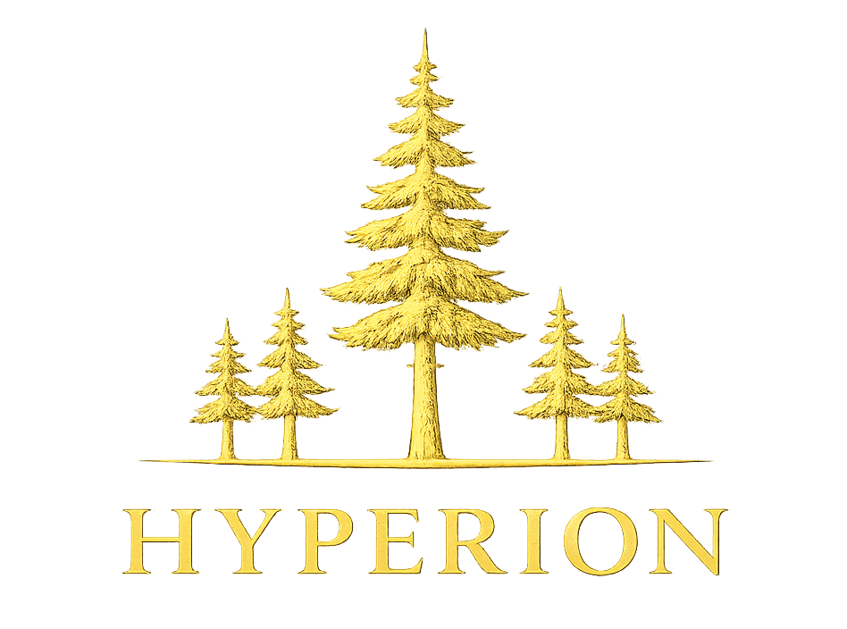
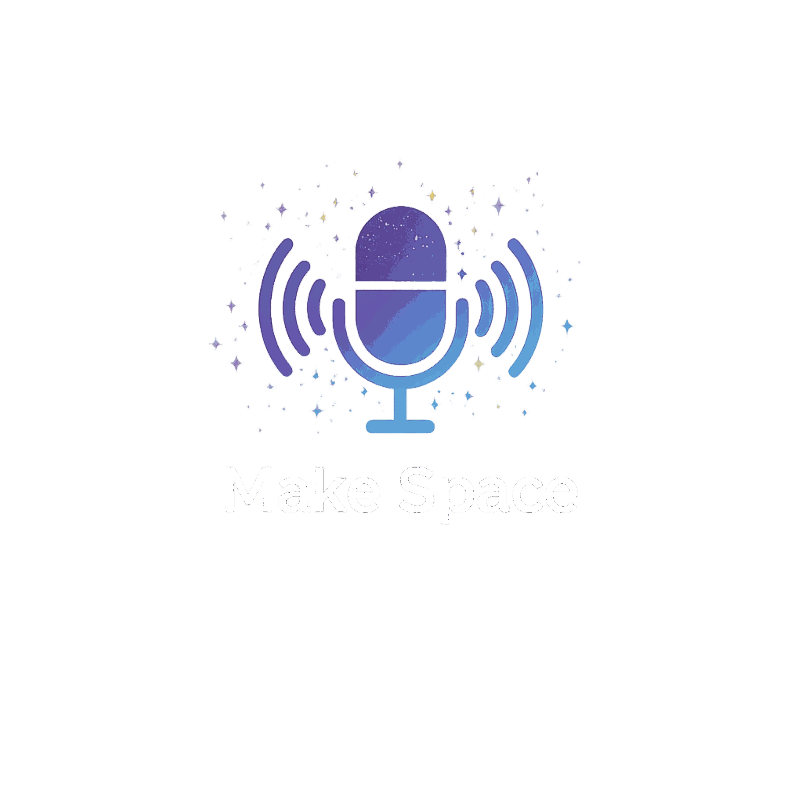

Estruturas que sustentam crescimento

A Hyperion é uma consultoria especializada em arquitetura de sistemas, engenharia de software e sustentação de longo prazo.
Decisões técnicas profundas, execução limpa e foco absoluto no que realmente importa, construir bases que não quebram quando a sua empresa cresce.
Sistemas frágeis não acompanham ambição real.
Crescer sem fundação sólida gera custos que ninguém
planeja e limitações que aparecem exatamente quando
mais importa.
Estrutura não é detalhe técnico. É o alicerce estratégico.
Projetamos e refinamos arquiteturas que evoluem com
segurança, absorvem mudanças e resistem ao teste do
tempo. Nosso foco é eliminar fragilidades, reduzir
retrabalho e evitar as decisões que geram juros
técnicos silenciosos.
Trabalhamos com empresas e líderes que entendem uma coisa simples:
Escala de verdade não é aumentar volume, é tomar
as decisões técnicas certas no momento certo.
Para times que levam estrutura a sério, entregamos:

Contato direto, sem burocracia e sem intermediários.
Me conte o contexto real da sua empresa, os desafios de arquitetura ou escalabilidade que você está enfrentando e o que precisa sustentar nos próximos anos.
Respondo pessoalmente e com agilidade.